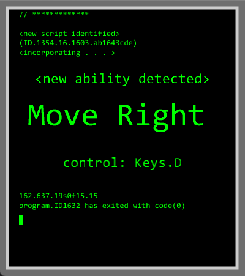
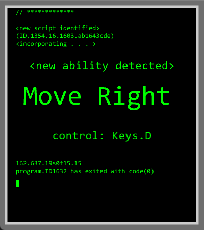

Jordan Allard
Game Design & Development student at Rochester Institute of Technology, with minors in Computer Science and Music
and Technology.
Aspiring to make the world a happier place, one smile at a time. And also to make cool things, which
hopefully other people will think are also cool.
Hello! I'm a motivated, capable, and collaborative game development student at Rochester Institute of Technology, and I'm excited to work with other bright minds to bring joy to others. I admire the way video games can take players on a journey. They can teach lessons, change lives, and unite people across the globe. But what I admire most about video games is simply the smile they can put on your face. Even if it's just a little bit at a time, I love the way games bring happiness to the world, uniting people of all ages and interests through the universal language of having fun.
I'm am hard-working, detail-oriented, and a team player. I take initiative, and I am eager for any kind of experience in the games industry. I am first and foremost a programmer, but I do have interest and limited experience in almost every part of the games industry, from graphic design to animation to audio. And although game development is my primary focus, I am more than happy to use my programming skills to make a difference in any industry that may require them.
What do I get up to? Some highlights from the past year:
Competing in the 2022 ICCAs with Encore A Cappella
Picking pumpkins at a volunteering event with RIT Circle K
Riding Behemoth at Canada's Wonderland with RIT Theme Park Enthusiasts
Becoming the Guardians of the Galaxy (on a budget) for Halloween
What Games Do I Play? Some stats about my gaming habits:
Favorite Game: The Legend of Zelda: Breath of the Wild
Favorite Genre: 2D Platformer
First Game Ever Played: Kirby's Epic Yarn
Most Recent Game Played: Final Fantasy VII (Original)
My contributions:
Code Architecture & Overall Planning
Level Editor
Asset Addition Pipeline
"Unfinished" Gameplay Implementation
Glitch Animations & Visual Polish
Group Coordination, Code Clean-Up, & Debugging
Castle Quest is a simple 2D-platformer that was created for an academic project in a team of four over a period of 9 weeks. The game was created entirely in C# and uses the MonoGame Framework. Designed to seem "unfinished," players unlock textures and basic movement abilities (including Jump, Attack, and Move Left) as they progress through the game.
For this game, I was responsible for creating a custom level editor that would allow my teammates and I to easily create and edit levels. I used Windows Forms to create an intuitive, tile-based editor interface. The editor allows users to both edit existing files or create new ones. The program features two independantly editable layers: a background layer and an object layer. Users can toggle the visibility of the object layer when the background layer is selected. The tiles use the same textures that will be seen in game, and the list of available tiles updates automatically as new assets are added to the game files.
My other contributions included macro-tasks such as planning the code architecture and overseeing coordination between group members (i.e. reducing duplicate code, ensuring style is unified, etc.) as well as debugging and general clean-up. I also implemented the "unfinished" aspect, allowing controls and textures to be unlocked dynamically, and created the console pop-up animations and glitch effects that occur when picking up a new ability.
This is a Custom Link!


 
